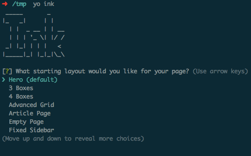
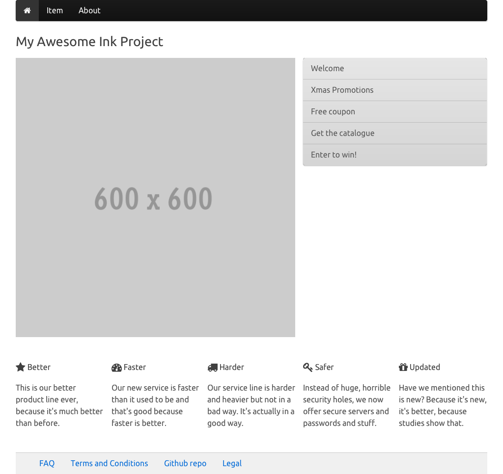
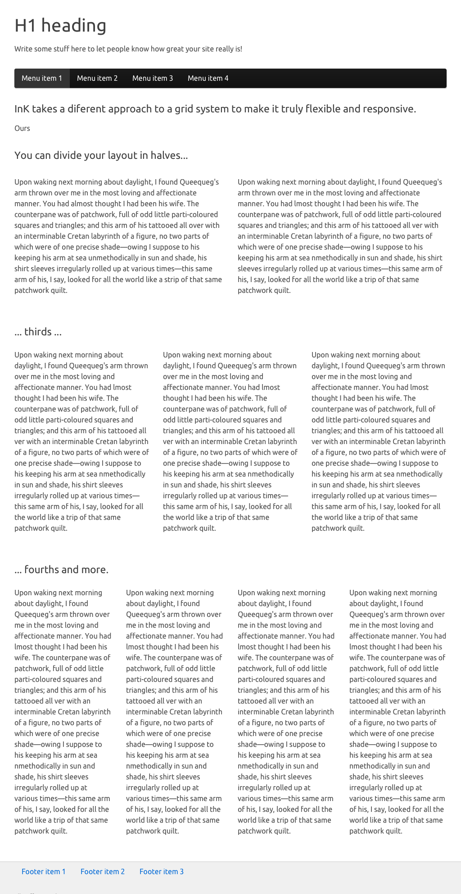

generator-ink 
A generator for Yeoman.
Getting Started
Install
To install generator-ink from npm, run:
$ npm install -g generator-ink Finally, initiate the generator:
$ yo ink First Run
On every run, generator-ink asks you for a main layout for your ink site. Just choose the one you like the most and hack away!

Sub Generators
After your project is created you can continue to create more pages using the available layouts. For that just use the following terminal command:
$ yo ink:page layout_name [file_name]You can find the available layout_names in the section below.
If you don't specify a file_name, generator-ink will create one with a timestamp just to avoid overwriting any other files you already have in your project.
Available Layouts
hero

3-boxes

4-boxes

advanced-grid

article-page

fixed-sidebar

fixed-width-column

regular-grid

sticky-footer

my-page

forms

Your layout could be here! Just send a pull request on github :)
License